De la masterclass Whimsy & Rituals
Crea tu Ritual
Aprende qué significa cada arcángel, cada fase de la luna, cada color, ingrediente y gesto. Después elige tu intención y recibe un ritual sencillo para hoy.
Abrir Crea tu Ritual
Herramientas
Las creamos para nuestras masterclasses. Úsalas cuando quieras, desde tu teléfono y sin descargar nada.
De la masterclass Whimsy & Rituals
Aprende qué significa cada arcángel, cada fase de la luna, cada color, ingrediente y gesto. Después elige tu intención y recibe un ritual sencillo para hoy.
Abrir Crea tu RitualDe la masterclass Angel Whispers
Escribe tu nombre y tu día de nacimiento, haz una breve respiración y descubre a tu arcángel guardián.
Abrir Angel WhispersLo aprendes en vivo. Lo practicas aquí.